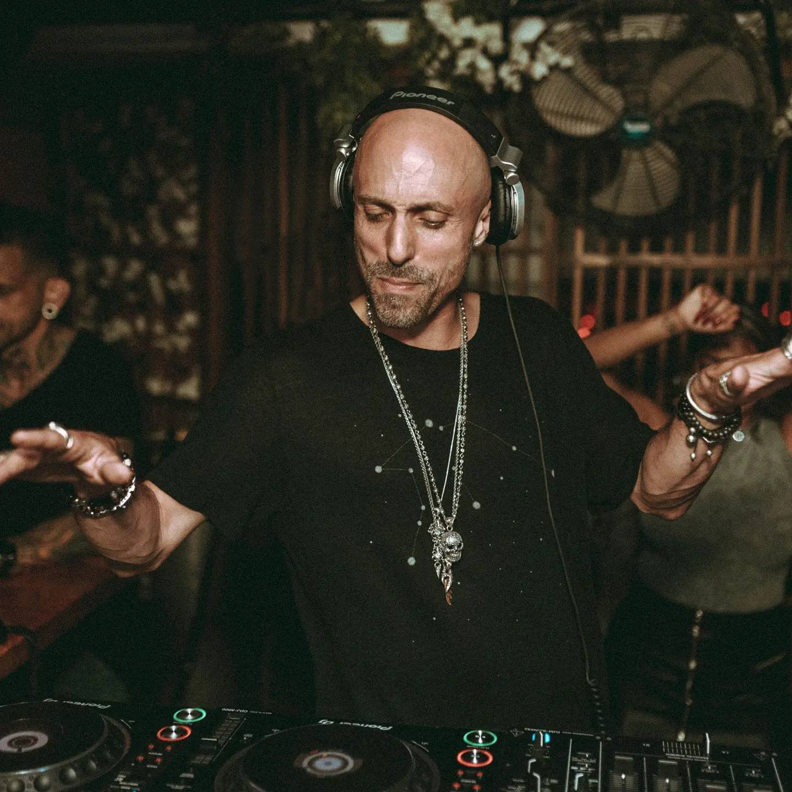
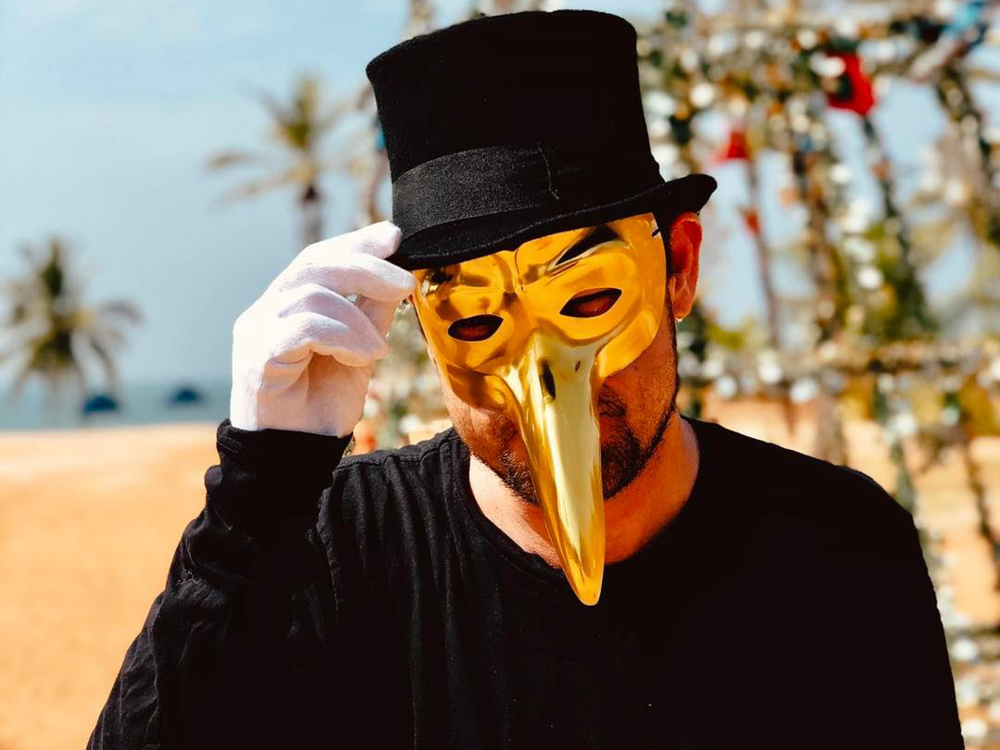
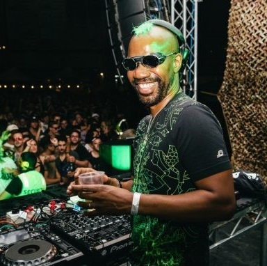

Michael Babi
Amante de la música y de la fiesta, Michael Bibi es de los DJs y productores más explosivos de la escena. Repasamos sus inicios, inspiraciones, la historia del su label Solid Grooves y cómo define qué es el “groove”.
En los videos que él mismo comparte, Michael Bibi aparece como un chico “fiestero”, de esos que pueden tocar por horas en donde sea. Pero detrás se esconde un productor insaciable, un emprendedor y un DJ con un oído perfecto para reventar todo. Pese a ser joven, Michael Bibi ha logrado marcar un estilo que se reproduce en todo el mundo. Este sonido se aleja del tech house tradicional para encontrar identidad propia, tanto en sus producciones como en su sello Solid Grooves. Y todo esto fue logrado por una actitud del propio Michael: romper con lo establecido.
Informacion de google.com & YouTube.com
Ir al final 👇
Technasia
Technasia, también conocido como Charles Siegling, es un músico y DJ criado y con sede en París. Hasta 2008, el grupo también estaba formado por otro miembro fundador, Amil Khan, criado y con sede en Hong Kong. Después de reunirse en Hong Kong a mediados de los 90, Charles Y.
Durante trece años, Technasia ha creado una fusión única este / oeste que se mueve sin problemas desde la escena del club de París, a las calles de Hong Kong, a los locales de techno más modernos de Europa. Fundada por Charles Siegling y Amil Khan en 1996, Technasia prosperó como dúo durante casi una docena de años. Ahora, Charles se ha ido solo, llevando a Technasia al 2010 como un proyecto individual. A diferencia de un divorcio de Hollywood, la separación entre Siegling y Khan es realmente amigable. Khan, con sede en Hong Kong, se retiró de Technasia para pasar tiempo con su joven familia.
Informacion de google.com & YouTube.com
Ir arriba ☝️
Claptone
Claptone obtuvo reconocimiento internacional en 2013 con su canción “No Eyes” featuring JAW. Ha lanzado los álbumes Charmer en 2015 en Different Recordings, The Masquerade Mixes en 2017 y Fantasy en 2018.
En el 2015, Mixmag describió a Claptone como "uno de los personajes más visibles en la escena global del deep house y su música como "producida de forma nítida y que te contagia sin esfuerzo".
Según la revista en línea de jazz The Jazz Line, el remix de Claptone fue en parte responsable del éxito del álbum de Gregory Porter. El álbum alcanzó el Disco de oro en Reino Unido después de que el remix de Claptone saliera en el Essential Mix de BBC Radio 1, y después encabezó la lista de Beatport, lo que llevó a los amantes de la música dance a buscar la canción original de Porter.3
Informacion de google.com & YouTube.com
Ir arriba ☝️
Green Velvet
Curtis Alan Jones, más conocido como Green Velvet, es referente y artífice de la popularidad de la música electrónica actual. Desde Chicago, cuna de la música House, construyó una carrera exitosa a través del poder de sus tracks y un carisma que hipnotiza al público de toda la escena mundial.
El DJ y productor Curtis Alan Jones saltó a la fama en la escena de la electrónica como Cajmere y Green Velvet (traducido al castellano quiere decir Terciopelo verde) respectivamente.
Informacion de google.com & YouTube.com
Ir arriba ☝️